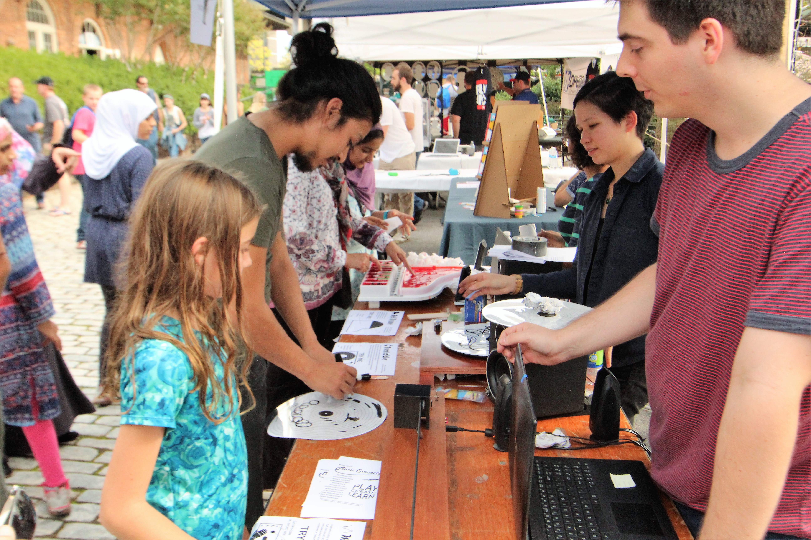

MakerFaire Atlanta 2018
October 27-28, 2018
STEAM Leadership Conference
March 22, 2018 (Organized by CEISMC at Georgia Tech)
Many thanks to CEISMC for sponsoring our appearance at the STEAM Leadership Conference!! We delivered a presentation entitled "Project Music Connector: Making the Musical Instruments of the Future", in which we discussed the iterative learning process we used that allowed us to learn the skills necessary to build and present our musical instruments; and what educators can take away from our successes and failures.
Abstract: Many teachers and educators struggle to engage or motivate students in STEAM or maker projects, and it is often difficult for students to imagine the breadth of possibilities in using STEM skills and methods to express oneself artistically. This presentation will demonstrate the creation of Project Music Connector, in which participants invent, design, and build new digital musical instruments with the goals of democratizing music technology and presenting to children different ways that engineering can be used to create tools for artistic expression. This performance will lead the audience through Barbe and Fusaro’s journey of learning how to make new musical instruments, and how they taught themselves the necessary technical skills and developed abilities to imagine new products that make musical expression and exploration more accessible to people. The session will conclude by discussing how educators can effectively implement iterative learning in STEAM/making projects as a way to foster students’ imaginations and help them make interdisciplinary connections with the goal of enabling artistic expression.
Rex Mills Middle School
March 19, 2018
We presented the Jello Piano, Optical Turntable, and Max Martenot to students of Rex Mills Middle School in their STEM Innovation Lab.
Renfroe Middle School
December 8, 2017
We were invited by Renfroe Middle School to talk to four classes of 7th- and 8th-graders about our musical instruments, concepts of sound, light, waves, engineering, design, and rapid prototyping.
MakerFaire Atlanta 2017
October 23, 2017
2nd Annual MākEdu Conference 2017
October 22, 2017
In a talk entitled "Project Music Connector: Making the Musical Instruments of the Future", we presented our work to an audience of educators, parents, and students, discussing our instruments, the lessons we learnt from building them, and how others can build upon our work.
Atlanta Science Festival
March 25, 2017
We presented the Jello Piano and Optical Turntable in a joint booth with EarSketch, sponsored by Georgia Tech and the Center for Music Technology of Georgia Tech. The 2017 Atlanta Science Festival drew over 41 000 visitors, making it the largest event we've done so far.
Harbor Oaks Montessori School
March 21, 2017
We were invited to spend a day at Harbor Oaks Montessori School to demonstrate our Jello Piano, Optical Turntable, and Max Martenot 2.0, and discuss topics surrounding rapid prototyping and engineering with the students.
Georgia Tech InVenture Day
March 15, 2017
Our presence at the Georgia Tech InVenture Day was in partnership with Women in Music Technology at Georgia Tech. We presented the Jello Piano, the Optical Turntable, and Max Martenot 2.0.
MakerFaire Atlanta 2016
October 1/2, 2016
Atlanta Symphony Orchestra Family Sunday Program
November 22, 2015
The Atlanta Symphony Orchestra invited us to present at one of their Family Sunday Programs, held in conjunction with the Alliance Theater and High Museum of Art. We presented the Jello Piano, WrapBeats, and GePS. We invited workshop participants to use the GePS to conduct a pre-recorded track and accompany live musicians.
Georgia Tech Society of Women Engineers Middle School Outreach Program
November 7, 2015
Georgia Tech's Society of Women Engineers invited us to give a lunch lecture to 150 middle school girls as part of their biannual middle school outreach program. We presented our GePS (Gesture-Based Performance System) and discussed the science behind it and the rapid prototyping techniques we used, and followed the presentation by a hands-on demo and lively Q&A session.

MakerFaire Atlanta 2015
October 3/4, 2015